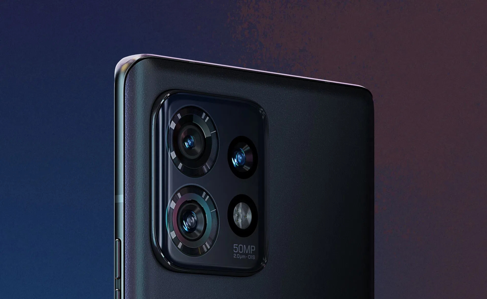
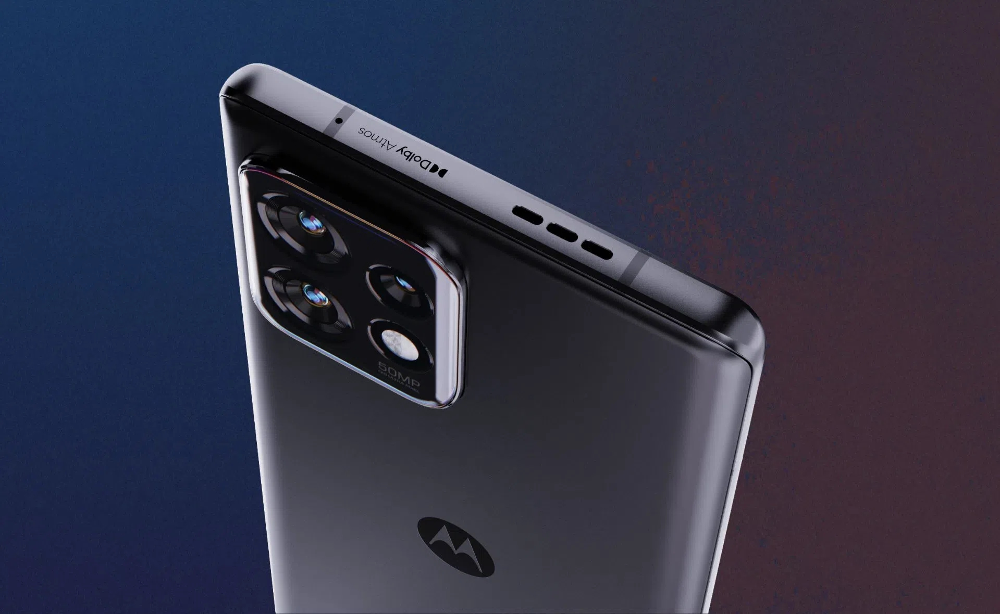
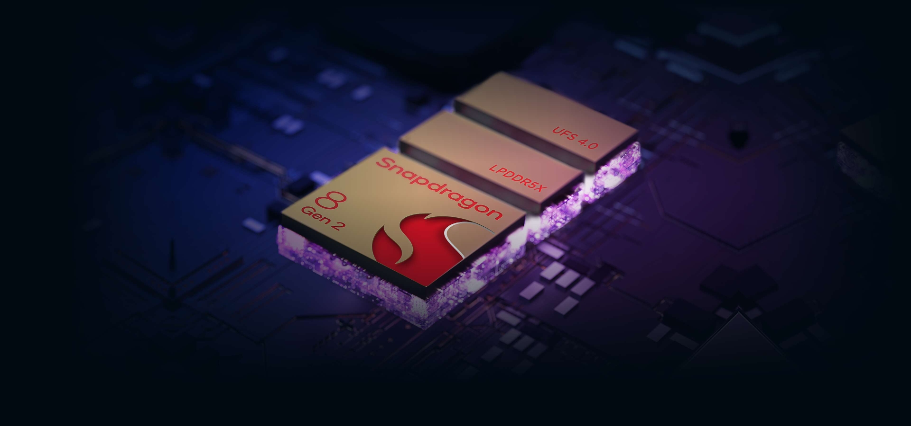
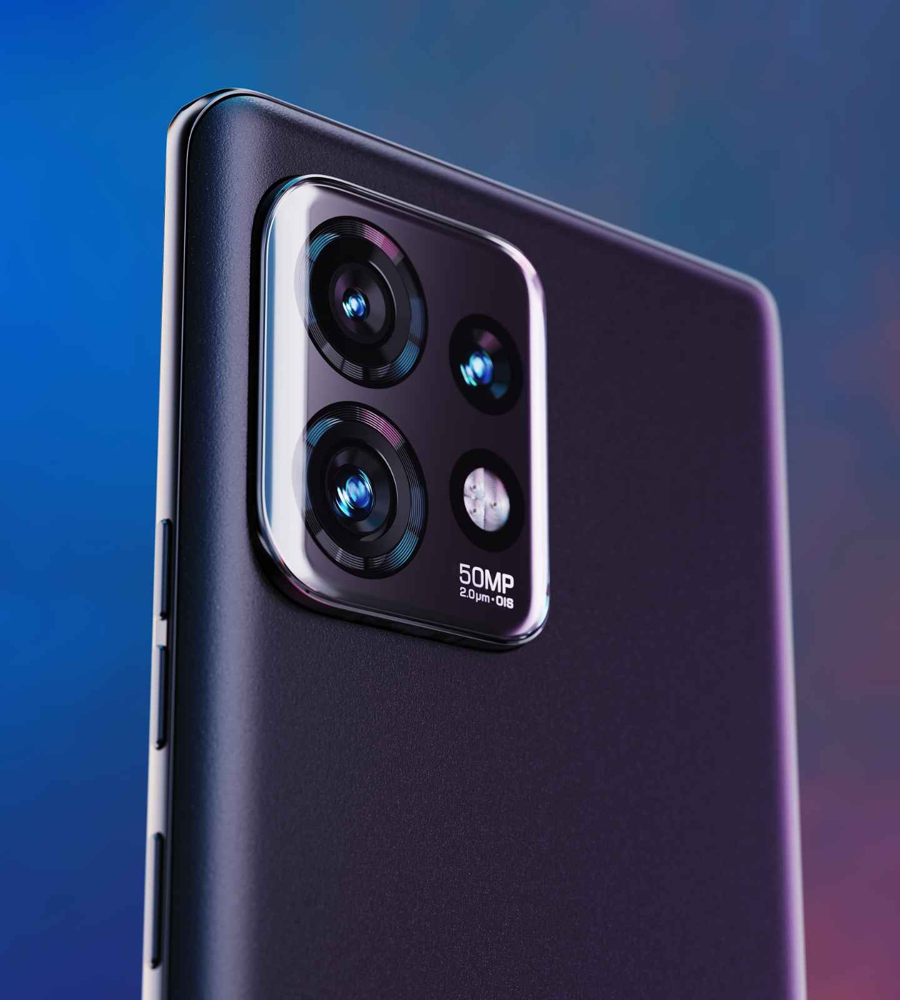
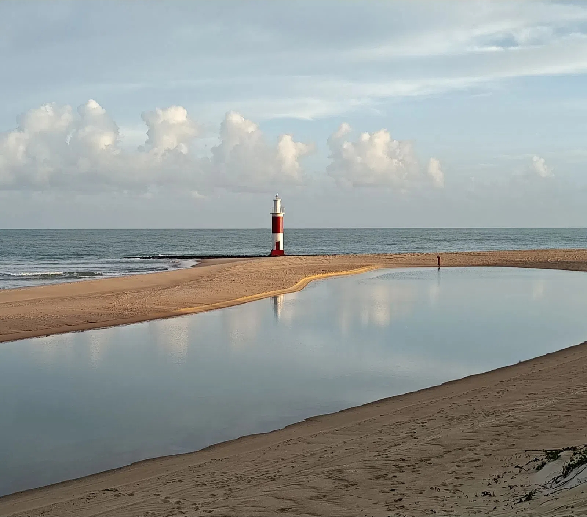
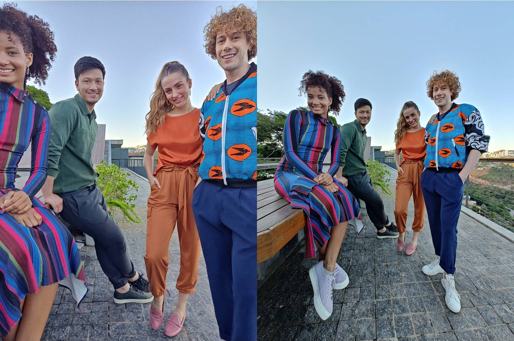
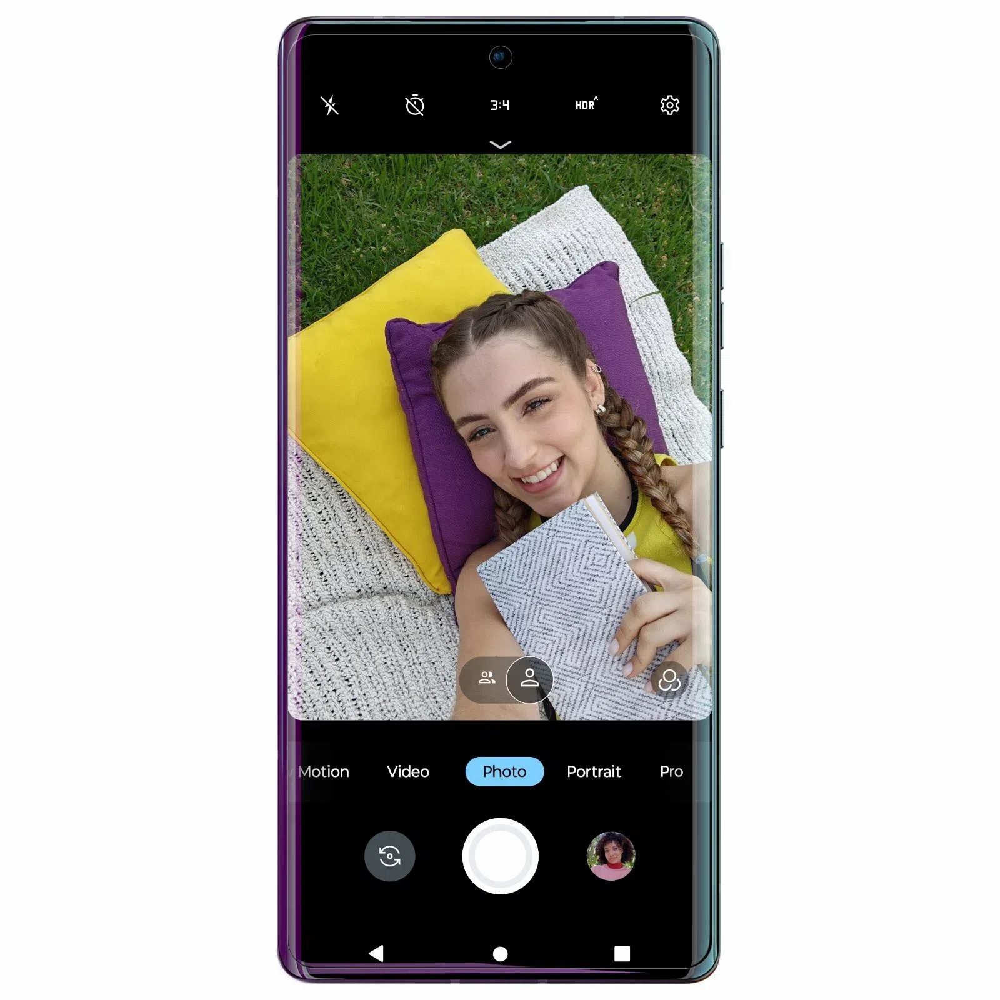
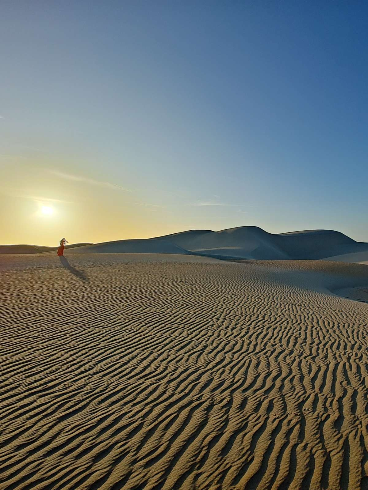
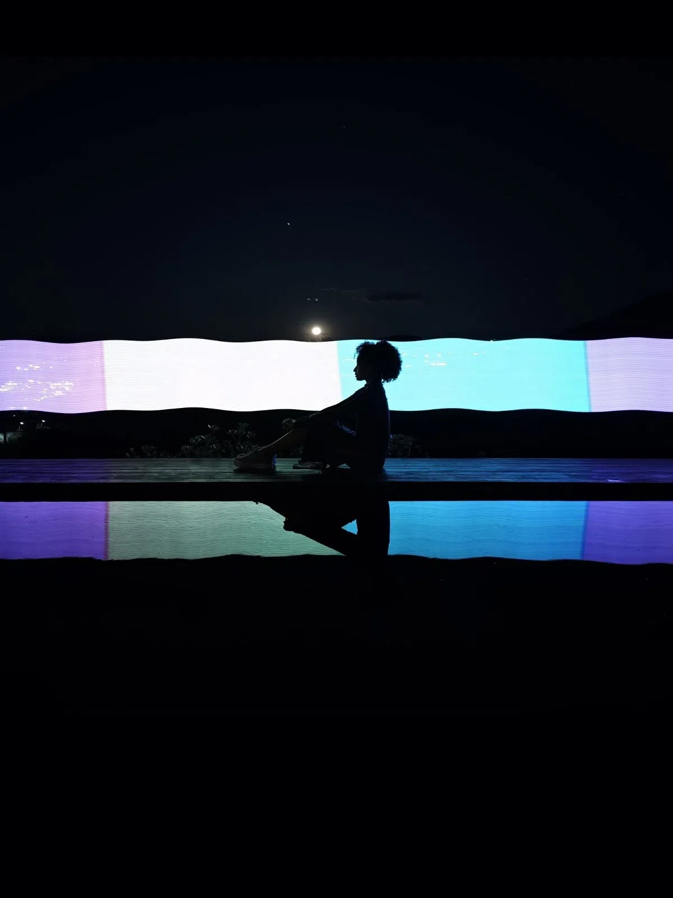
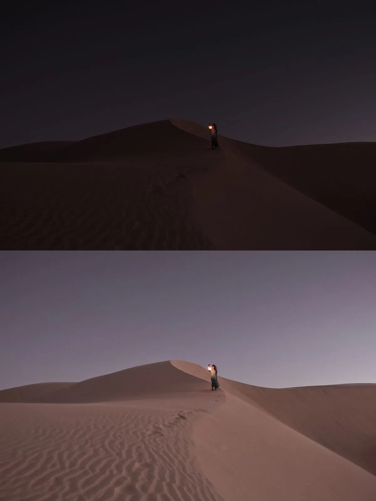

Motorola Edge 40 Pro 12/256Gb — это 100% симметрия. Гладкая поверхность, противоотпечаточное матовое стекло с защитой Corning Gorilla Glass Victus и стильные цвета — все это создает невероятно комфортный опыт повседневного использования!



Сверхбыстрый и сверхмощный процессор
Непревзойденная скорость с 5G
8-ядерный чипсет Snapdragon 8 Gen 2 гарантирует молниеносную скорость сети без буферизации, а также ускорение функциональных возможностей смартфона.
Лучшая связь
Подключайтесь к беспроводному соединению Wi-Fi 6E и Wi-Fi 7 и наслаждайтесь производительностью и скоростью, что бы вы ни делали.
Быстрая работа и достаточно памяти
Motorola Edge 40 Pro 12/256Gb имеет самую быструю на рынке оперативную память LPDDR5X емкостью до 12 ГБ, отвечающую за скорость работы смартфона. Благодаря накопителю UFS 4.0 размером до 256 ГБ вы можете хранить абсолютно все важные файлы в одном месте.
Взгляните на мир под новым углом
Благодаря тройной камере вы можете делать фотографии и видео нового уровня! Глубокие портреты, потрясающие широкоугольные снимки, подробные макрофото, кинематографические видео — все это и многое другое вы можете делать с Motorola Edge 40 Pro 12/256Gb.


Неважно какое освещение
Оптическая стабилизация изображения гарантирует отличные кадры как в яркий день, так и в пасмурную погоду. Детальные и четкие снимки без дрожания.

Показывайте больше
С широкоугольным объективом 50 Мп все важнейшие детали будут присутствовать в кадре!
Размытие фона
Делайте глубокие чувственные портреты благодаря функции размытия фона. Выделяйте главного героя фотографии!

Более четкие селфи
Делайте селфи при любом освещении и получайте всегда отличный яркий результат! Вы также можете снимать на две камеры одновременно, чтобы показать свои эмоции на события.
Насыщенные цвета
Снимайте видео в разрешении 4K и получайте непревзойденный результат с яркими, естественными цветами и глубокой контрастностью.
Насыщенные цвета
Снимайте видео в разрешении 4K и получайте непревзойденный результат с яркими, естественными цветами и глубокой контрастностью.

Мгновенная фокусировка
Благодаря технологии All Pixel, камера работает быстро и точно, а вы получаете четкое изображение со всеми деталями.
Управляйте фокусом
Настройте расстояние фокусировки и добавляйте размытие фона, чтобы получить максимально профессиональные портреты.

Природные эффекты
Благодаря продолжительной экспозиции (32 сек) вы можете создавать настоящие шедевры со светом.

Улучшайте ночные снимки
С Motorola Edge 40 Pro 12/256Gb, который автоматически улучшает освещение, даже если на улице уже давно ночь.
Не только фото
Делайте яркими и ночными видео. Вам гарантировано большее количество деталей, четкость и естественный цвет во время плохого освещения.
Мощная стабилизация
Даже если вы вращаете камеру на 360°, результат видео вас удивит — динамические снимки и видео останутся четкими и ровными.